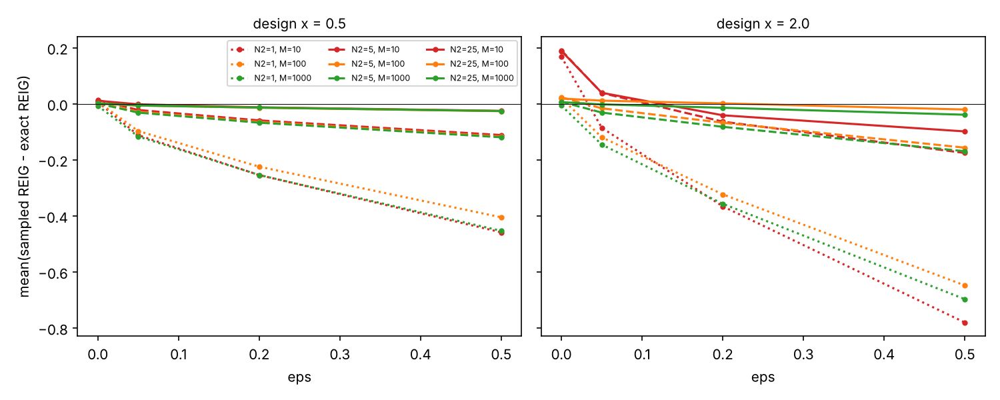
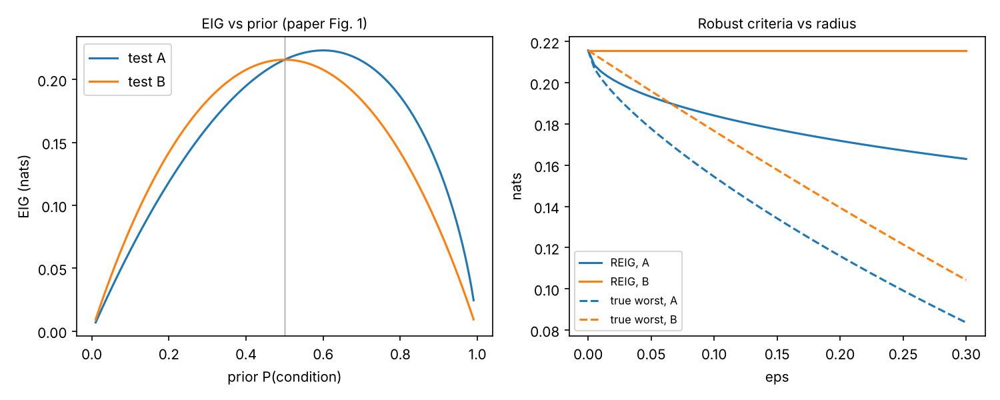
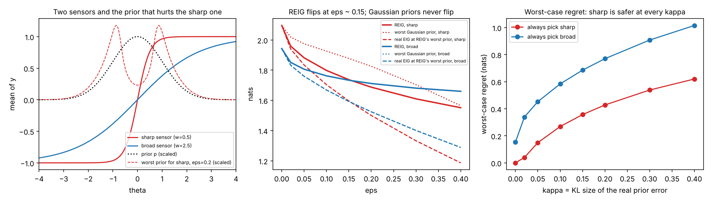
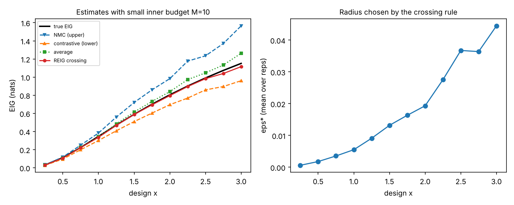

Draft. First version written Nov 19, 2026. Numbers come from the scripts in this repository and may change as we add seeds and models. Sections marked [TODO] still need the team's input.
How Robust Is Robust Enough?
Calibrating the KL radius in robust expected information gain
Abstract. Robust expected information gain (REIG) scores an experiment by its worst case over priors within a KL ball of radius $\varepsilon$, but gives no rule for choosing $\varepsilon$. On three small models where every quantity can be checked exactly, we find that (i) $\varepsilon$ is entangled with estimator noise, (ii) REIG's tangent approximation can both hide sensitivity and expose non-Gaussian worst cases, (iii) REIG's design switch in a two-sensor problem is confirmed for the true worst case by bracketing it with the paper's own bound, and (iv) a simple rule that pairs an over- and an under-estimating EIG estimator picks a radius from the data and gives the most accurate EIG estimates we tried. All results are preliminary and come from one-dimensional toy models.
1. Problem and motivation
Bayesian experimental design picks the experiment that is expected to teach us the most. The usual score is the expected information gain (EIG): how much, on average, the experiment's outcome $y$ will shrink our uncertainty about an unknown parameter $\theta$. For a prior $p(\theta)$, likelihood $p(y\mid\theta,\xi)$ and design $\xi$,
$$ I(p,\xi) \;=\; \mathbb{E}_{p(\theta)}\Big[\,\mathrm{KL}\big(p(y\mid\theta,\xi)\,\big\|\,p(y\mid\xi)\big)\Big]. $$The catch is that EIG is computed under the prior, and priors are often chosen for convenience. If the prior is a little wrong, the ranking of experiments can change. EIG is also usually estimated by nested Monte Carlo, and sampling error acts much like a perturbed prior.
Go and Isaac [1] proposed robust EIG (REIG): score each design by its worst case over all priors $q$ within a KL ball of radius $\varepsilon$ around $p$. Their approach is elegant and cheap to compute, but it leaves one number open. How large should $\varepsilon$ be? Too small and REIG is just EIG. Too large and every design looks bad, and the method becomes overly cautious. The authors say directly that "a definite a priori estimate for $\varepsilon$ seems unlikely in most cases" and suggest, as future work, tying $\varepsilon$ to the error of the sampling estimator.
That is our question. We do not solve it in general. Instead we (a) build small models where every quantity can be checked exactly, (b) map out how $\varepsilon$ interacts with estimator noise and with the design decision, and (c) test one concrete calibration rule.
2. Background: what REIG actually computes
The true worst case $\inf_{q\in A(\varepsilon,p)} I(q,\xi)$, with $A(\varepsilon,p)=\{q : \mathrm{KL}(q\,\|\,p)\le\varepsilon\}$, is hard: EIG is concave in $q$, so minimizing it over a convex set can have many local minima. Go and Isaac [1] replace EIG with its tangent (affine) approximation at $p$ and minimize that instead. Writing
$$ d(\theta) \;=\; \mathrm{KL}\big(p(y\mid\theta,\xi)\,\big\|\,p(y\mid\xi)\big) \;\ge 0 , $$By convex duality [4], REIG becomes a one-dimensional convex problem (their eq. 18):
$$ I_\varepsilon(p,\xi) \;=\; -\inf_{\lambda\ge 0}\Big\{\lambda\varepsilon + \lambda\log \mathbb{E}_{p(\theta)}\big[e^{-d(\theta)/\lambda}\big]\Big\}. $$Three facts matter for us:
- The KL ball is on the prior of $\theta$ only. The likelihood is held fixed.
- REIG sits between EIG and the true worst case, $I(p)\ge I_\varepsilon \ge I^{\text{true}}_\varepsilon$, and is within $\varepsilon$ of the true worst case.
- With samples $d_1,\dots,d_N$, REIG is a "log-sum-exp" reweighting that leans toward the smallest $d_i$ as $\varepsilon$ grows (their Algorithm 1). At large $\varepsilon$ it approaches $\min_i d_i$.
3. Methodology
3.1 Models where we know the answer
- Linear-Gaussian. $\theta\sim N(0,1)$, $y\mid\theta\sim N(x\theta,1)$. EIG, $d(\theta)$ and even REIG have closed forms, so we can measure the exact error of any estimator.
- Two blood tests (the paper's own example). A binary condition and two tests with the same EIG at a 50% prior. Everything is exact.
- Sharp vs broad sensor (new). $\theta\sim N(0,1)$, $y\sim N(\tanh((\theta-c)/w),\,0.05^2)$. A sharp sensor ($w=0.5$) is precise near zero but saturates in the tails; a broad one ($w=2.5$) is less precise but works over a wider range. We computed all values on a fine grid, so there is no sampling noise. This is the first model we found where the best design changes with $\varepsilon$.
3.2 Estimators
- Nested Monte Carlo (NMC) [5]: estimates $p(y)$ with $M$ prior samples. For finite $M$ it over-estimates EIG.
- Contrastive (as in ACE/PCE [3]): also includes the true $\theta_i$ when estimating $p(y)$. For finite $M$ it under-estimates EIG.
- REIG: Algorithm 1 of the paper, with $N_1$ prior samples and $N_2$ outcomes per sample.
3.3 A calibration rule to test
Following the paper's suggestion, we tested this rule: apply the robust minimum (REIG) to the over-estimating NMC samples and the robust maximum (their eq. 19) to the under-estimating contrastive samples. Both move toward the truth as $\varepsilon$ grows. Pick $\varepsilon^*$ where they meet, and use that common value as the estimate. The data choose the radius.
4. AI-assisted research process
We used AI throughout, and we treated every AI output as a claim to check, not a result. Our loop was:
- Generate. An AI assistant (Claude) wrote most of the code and ran the experiments.
- Check against something independent. Closed-form answers, the paper's equations, the paper's own numbers, and physical sense (information can't be negative).
- Get a second opinion. A second AI model reviewed the code without seeing the first one's reasoning.
- Reproduce. Every script runs from a fixed seed. We re-ran everything on a separate machine and got identical numbers.
- Log it. Each session is recorded in
ai_log/: what was asked, what came back, how it was checked, and what changed.
What the checks caught
- A wrong definition. The first REIG implementation put the KL ball on the joint distribution of $(\theta,y)$ instead of on the prior. It ran fine but gave negative information gain. Reading the paper showed this was a different, more conservative criterion (their eq. 20).
- Overclaiming. The second AI flagged that our README blurred REIG with the true worst case, and that one explanation of a result ("the smallest estimate is the noisiest") was not supported. Both were fixed.
- A refactoring bug. A sign error appeared only at $\varepsilon=0$. We caught it because a baseline error jumped from 0.04 to 1.18 between runs.
- Claims wider than the evidence. A second review pointed out that our regret result covered only the priors we tested, that a "bound check" did not by itself establish the true worst case, that "right sensor" in one experiment meant "best under the nominal prior", and that two experiments used different fallback rules for the same method. All four were fixed, and the same review suggested the interval bracketing in Section 5.4.
- A misleading figure. A plot title claimed "the safer choice depends on $\kappa$." The numbers showed the opposite, so the title was changed.
[TODO: each team member adds a sentence on what they checked or did by hand.]
5. Results
5.1 The implementation matches theory
On the linear-Gaussian model, sampled REIG follows the exact closed form, and the paper's bounds hold everywhere we tested ($I \ge I_\varepsilon$, and $I_\varepsilon$ minus the worst Gaussian-prior EIG stays below $\varepsilon$). The joint-ball variant, by contrast, goes far below zero.

5.2 Estimator noise and $\varepsilon$ interact
Because REIG leans toward the smallest $d_i$, noise in each $d_i$ pulls it down. The number of outcomes per $\theta$ ($N_2$) matters much more than the inner sample size $M$. At $\varepsilon=0.5$ and $x=0.5$, the bias was $-0.45$ with $N_2=1$, $-0.12$ with $N_2=5$ and $-0.03$ with $N_2=25$. So the "right" $\varepsilon$ cannot be chosen without knowing the estimator's noise.

5.3 REIG can miss sensitivity
In the two-test example both tests have the same EIG at a 50% prior. Both REIG and the true worst case prefer test B for every $\varepsilon>0$, which agrees with the paper's argument. But REIG says test B loses nothing: its line is flat, because B's $d(\theta)$ is the same for both values of $\theta$, so the tangent approximation sees no sensitivity. B's true worst case actually falls from 0.216 to 0.105 nats at $\varepsilon=0.3$. The part REIG drops is exactly the curvature term it approximates away.

5.4 ...but it can also catch a danger simple checks miss
With the sharp and broad sensors, plain EIG prefers sharp (2.10 vs 1.94 nats). REIG switches to broad between $\varepsilon=0.15$ and $0.2$. If we only consider Gaussian priors (a wrong prior mean or variance), sharp stays best at every radius. But REIG's own worst-case prior for the sharp sensor is two-humped, not Gaussian, and it hurts the sharp sensor much more.
We can do better than compare criteria: we can bracket the true worst case. The paper's bound $|I_\varepsilon - I^{\text{true}}_\varepsilon|\le\varepsilon$ gives a lower end, and the real EIG at any prior we tested gives an upper end. These intervals are tight, and they settle which sensor has the better true worst case at every radius we checked except one:
| $\varepsilon$ | sharp: true worst case in | broad: true worst case in | better worst case |
|---|---|---|---|
| 0.05 | [1.832, 1.835] | [1.756, 1.760] | sharp |
| 0.10 | [1.698, 1.704] | [1.663, 1.669] | sharp |
| 0.15 | [1.587, 1.596] | [1.584, 1.593] | undecided (overlap) |
| 0.20 | [1.488, 1.501] | [1.512, 1.525] | broad |
| 0.30 | [1.310, 1.333] | [1.381, 1.401] | broad |
So, within the accuracy of our grid, REIG's switch is correct: the true worst-case preference really does flip between $\varepsilon=0.1$ and $0.2$. A check using only Gaussian priors would have missed this.
There is a twist. If we measure robustness by regret (how much worse than the best sensor we could do) instead of worst-case EIG, sharp had the lower maximum regret at every radius. This is only over the priors we tested (Gaussian priors plus the two REIG worst-case priors), not a worst case over the whole ball. Still, it shows that REIG answers the max-min question, and that is not the only reasonable notion of "robust."

5.5 A data-driven radius
On the linear-Gaussian model with a small inner budget ($M=10$), the crossing rule had an error (RMSE) of 0.061 nats, compared with 0.246 for NMC, 0.115 for the contrastive estimator and 0.099 for their simple average. The chosen $\varepsilon^*$ was small (0 to 0.074) and grew with the strength of the design.

On the sensor model we also asked a narrower question: with noisy estimates, which method picks the sensor with the higher EIG under the reference prior? This tests estimation accuracy, not protection against a wrong prior. The crossing rule never sees the exact answer when it chooses $\varepsilon$. With 100 seeds per budget, the crossing rule's estimates were nearly unbiased from $M=20$ on (errors of 0.01 nats or less), and it picked correctly most often at $M=20$ (88% vs 75% for NMC and 85% for the contrastive estimator). From $M=100$ on, almost every method picks correctly. At the tiniest budget ($M=5$) the crossing rule did worse than NMC (58% vs 78%). NMC's bias there is enormous (+17.5 nats for the sharp sensor), but it happens to favor the sharp sensor, so NMC picks correctly for the wrong reason. An accurate estimate and a correct ranking are not the same thing.

6. Discussion and conclusions
What we learned:
- $\varepsilon$ has two jobs. It is meant to cover prior misspecification, but in practice it also absorbs estimator noise, and the two pull in different directions. A radius that is sensible for the prior can be far too aggressive for a noisy estimator.
- The tangent approximation cuts both ways. It can hide sensitivity completely (two-test example), and it can also reveal non-Gaussian worst cases that a "wrong mean or variance" check misses (sensor example).
- REIG's switch can be verified. Bracketing the true worst case with the paper's bound gave intervals tight enough to confirm REIG's design choice at every radius but one.
- "Robust" needs a definition. Maximizing the worst-case EIG and minimizing regret (over the priors we tested) chose different sensors in the same problem.
- Pairing an over- and under-estimator gives a usable radius. The crossing rule gave the most accurate EIG estimates we tried on our toy problems, which supports the paper's suggestion. A more accurate estimate did not always mean a better design choice, though (Section 5.5, $M=5$).
Limitations:
- All models are small and one-dimensional in $\theta$. We have not tested the paper's own benchmarks (A/B test, preference, pharmacokinetic).
- The true worst case is only bracketed, not computed, in the sensor model, and all sensor values rely on a numerical grid.
- The crossing rule has no theory yet, and we only tested it with plain NMC and a simple contrastive estimator.
Future directions:
- Test the crossing rule on the paper's benchmarks and with learned (variational) estimators.
- Derive when the crossing point exists and how $\varepsilon^*$ scales with $M$ and $N_2$.
- Compare REIG with regret-based robust design on problems with many candidate designs.
References
- J. Go and T. Isaac. Robust expected information gain for optimal Bayesian experimental design using ambiguity sets. UAI, PMLR 180:728–737, 2022. arXiv:2205.09914
- A. Foster, M. Jankowiak, E. Bingham, P. Horsfall, Y. W. Teh, T. Rainforth and N. Goodman. Variational Bayesian optimal experimental design. NeurIPS, 2019.
- A. Foster, M. Jankowiak, M. O'Meara, Y. W. Teh and T. Rainforth. A unified stochastic gradient approach to designing Bayesian-optimal experiments. AISTATS, 2020.
- A. Shapiro. Distributionally robust stochastic programming. SIAM Journal on Optimization, 27(4), 2017.
- K. J. Ryan. Estimating expected information gains for experimental designs with application to the random fatigue-limit model. Journal of Computational and Graphical Statistics, 12(3), 2003.
- A. Krause and J. Hübotter. Probabilistic Artificial Intelligence. arXiv:2502.05244, 2025.
All figures can be reproduced with
for f in experiments/0*.py; do python "$f"; done.